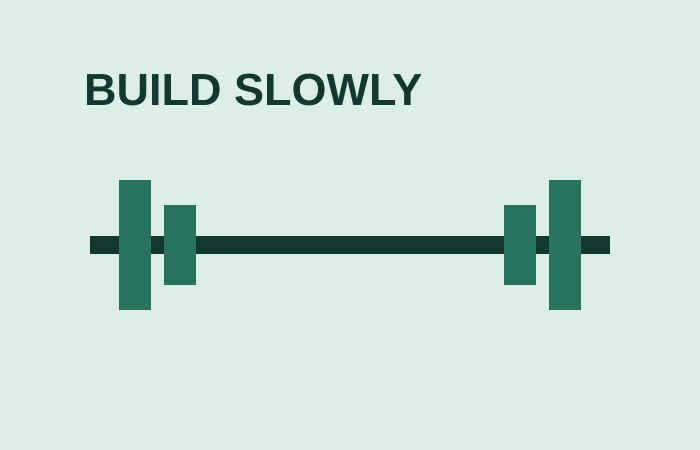

Muscle growth and hypertrophy
Hypertrophy is the term used for an increase in muscle size. It is a slow process built from regular resistance training, enough food and recovery.

Keep it simple
Use exercises you can perform safely with good control. Write down the sets, repetitions and weight you use. Over time, a small improvement in a repetition, weight or technique can be progress.
The American College of Sports Medicine explains that regular resistance training is important and that a hypertrophy goal often uses more weekly training volume. There is no magic exercise or quick fix.
Example simple workout table
| Exercise | Sets | Repetitions | Important note |
|---|---|---|---|
| Leg press | 3 | 8–12 | Use controlled movement. |
| Chest press | 3 | 8–12 | Keep good technique. |
| Seated row | 3 | 8–12 | Do not rush the reps. |
Easy things to remember
- Train regularly.
- Use good form.
- Record your progress.
- Eat enough for your activity.
- Get enough sleep.
- Do not ignore pain or injury.
For protein, the International Society of Sports Nutrition gives general guidance for exercising people, but personal needs can vary. Read the protein position stand.